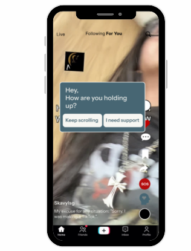
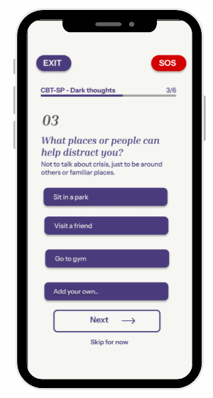
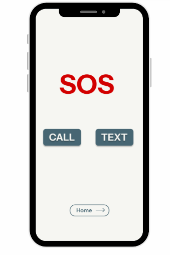
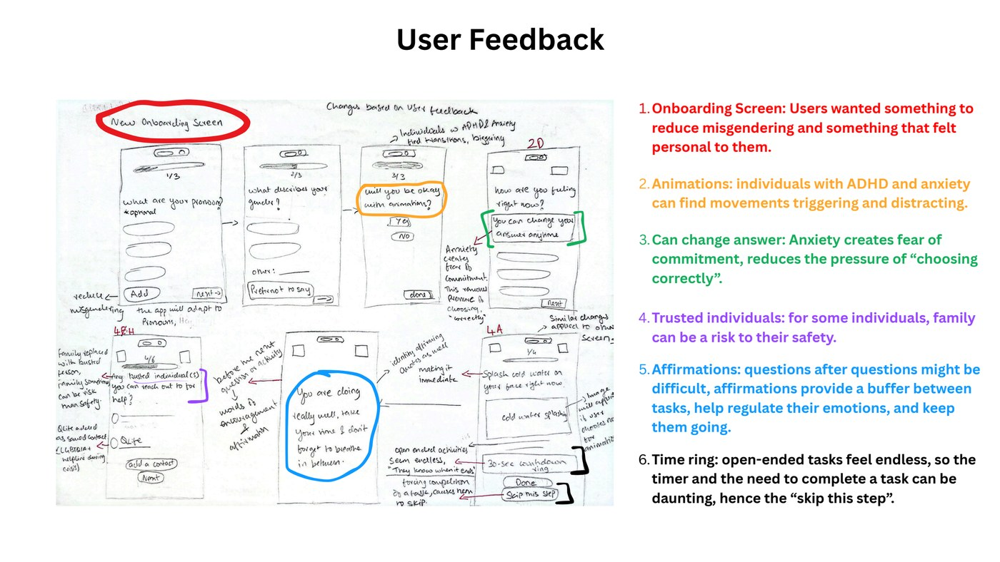
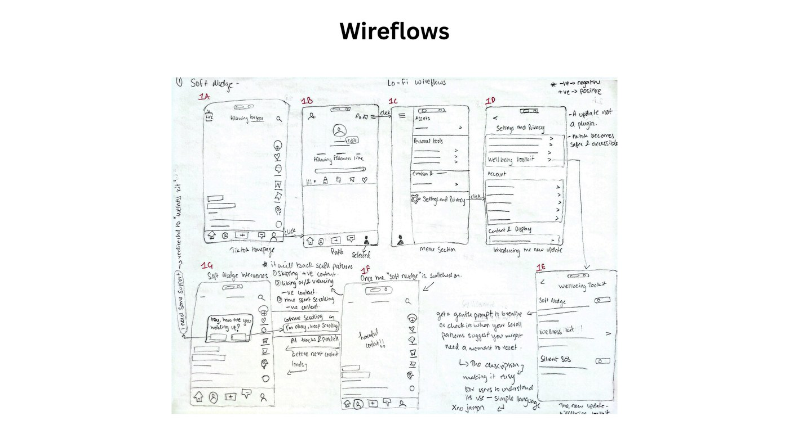
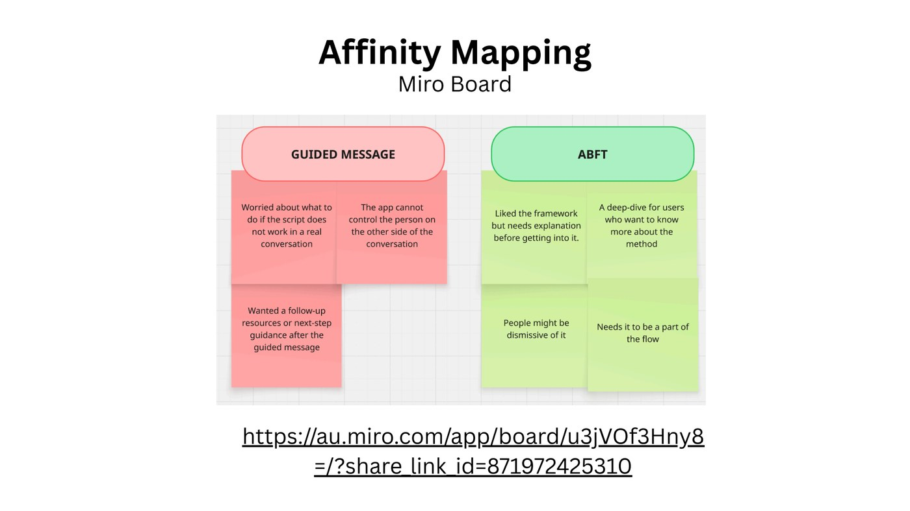
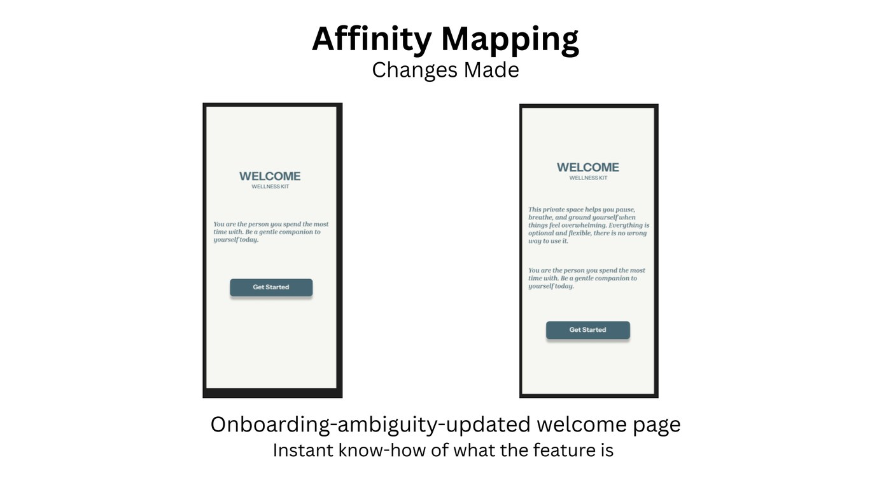

DMS3 Wellness Kit
A wellness support feature designed to reduce cognitive load, support emotional safety, and make help easier to access during high-stress digital moments.



Case study
The Wellness Kit explored how a digital product could offer support without overwhelming people who may already be anxious, distressed, or cognitively overloaded. The design direction focused on gentle onboarding, clear therapy choices, a visible safety plan, and accessible interaction patterns.
- Built wireflows to map the path from entry point to dashboard, therapy selection, reflection tasks, SOS support, and exit.
- Applied WCAG considerations including contrast, touch targets, consistent navigation, labels, readable language, and non-text contrast.
- Iterated after user feedback, peer feedback, affinity mapping, and a second round of prototype testing.
Research
Testing showed that users needed the product to feel personal, reduce misgendering, and lower the anxiety of remembering important safety steps. Feedback also showed that users wanted faster ways to return home, clearer therapy context, and fewer moments that felt repetitive or jarring.

Sketching and wireframes
The early structure was mapped through wireflows before visual polish. This helped make the support journey easier to reason about: where users enter, how they choose a therapy path, where the dashboard sits, and how they exit safely.


Iterating
The prototype changed after feedback around ambiguity, repetitiveness, colour meaning, onboarding timing, and crisis support. The updated direction made therapy sections more visually distinct, clarified why choices led to specific screens, and added a more direct route back to the dashboard.

Final prototype
The final Figma prototype brings together the refined wellness flow, accessibility decisions, colour psychology, and feedback-driven interface updates.